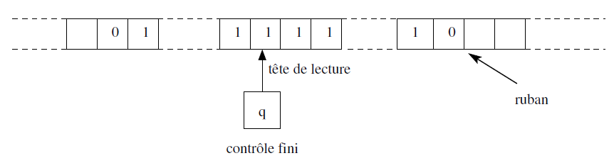
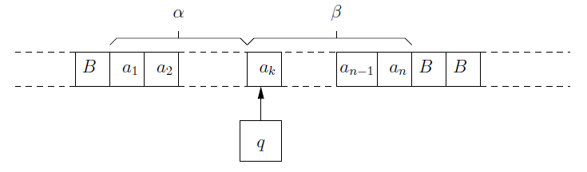
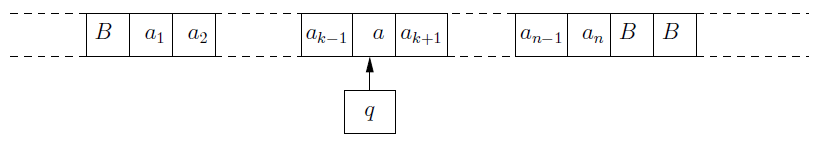
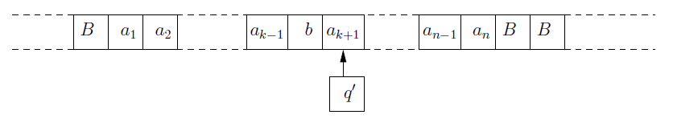
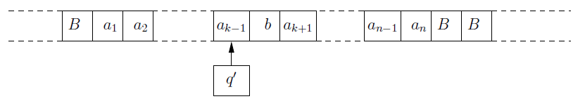
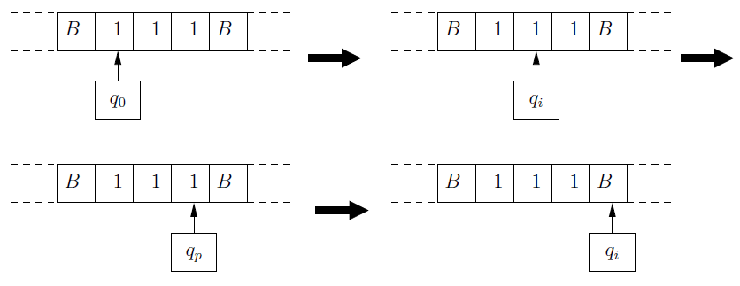
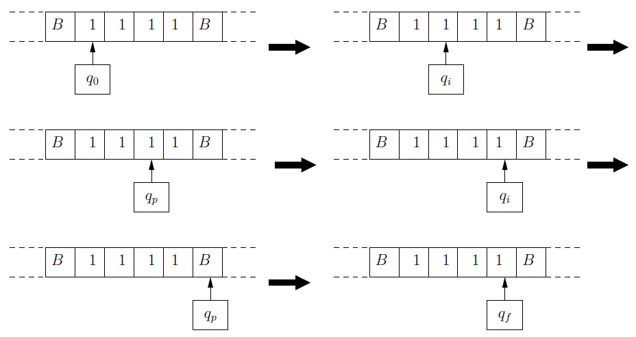

Un problème en informatique est constitué de données sous une certaine forme et d'une question portant sur ces données.
Exemple d'un problème :
Données : 250 gr. de farine, 0.5 litre de lait, 2 oeufs, 2 gr. de sel.
Question : Comment faire une pâte à crêpes ?
Un algorithme est une méthode indiquant sans ambiguïté des actions mécaniques à effectuer pour trouver la réponse à un problème.
Algorithme pour le problème 1 :
Mettre la farine dans un saladier.
Faire un puits.
Y casser les oeufs entiers.
Ajouter l'huile, le sel et 10cl. de lait.
Ajouter l'huile, le sel et 10cl. de lait.
Battre énergiquement la pâte avec une cuillière.
Mouiller progressivement avec le reste de lait.
Laisser reposer une heure.
Existe-t-il un algorithme pour chaque problème ?
Non, certains problèmes ne peuvent être résolus par aucun algorithme.
Heureusement pour la Française des jeux qu'il n'existe pas un algorithme qui permette de trouver les numéros gagnants du prochain tirage!
Un problème pour lequel aucun algorithme n'existe est dit indécidable.
Un algorithme peut exister mais n'est pas forcément utilisable.
Exemple d'un problème :
Un puzzle de 25 cartes (carré de 5x5). Si l'on doit tester toutes les combinaisons, cela fait 25! combinaisons différentes.
25! = 15 511 210 043 330 985 984 000 000 ---> ce qui fait beaucoup de possibilités.
Un ordinateur qui vérifierait 1 milliard de combinaisons par seconde mettrait 490 millions d'années pour tout tester ! L'algorithme est donc inutilisable.
Deux raisons pour lesquelles un algorithme peut être inutilisable :
le temps de calcul est trop long.
il utilise trop de place mémoire.
S'il existe un algorithme utilisable alors le problème est traitable.
Complexité
La complexité correspond à deux valeurs :
son temps d'exécution
la place mémoire utilisée
L'algorithmique est l'étude des méthodes pour améliorer la complexité d'un algorithme.
Alphabet, mot, langage
Un alphabet désigne un ensemble fini de symboles.
Un mot d'un alphabet est une suite finie de symbole (pris dans cet alphabet).
Un langage est un ensemble de mots.
Exemple : {a, bab} est un langage.
Présentation
La machine de Turing est une modélisation mathématique très simple, mais très puissante, du fonctionnement d'un ordinateur.
La partie de contrôle représente le microprocesseur (composé d'un nombre fini d'états).
Le ruban représente la mémoire de l'ordinateur (infini).
La tête de lecture est le bus qui relie le microprocesseur et la mémoire.

Machine de Turing au cours d'un calcul.
Définition formelle
Une machine de Turing M est un septuplet (Q, q0, F, Γ, B, Σ, δ )
Q est l'ensemble fini d'états du contrôle
q0 est l'état initial
F ⊆ Q est l'ensemble des états finaux
Γ est l'alphabet du ruban
B ϵ Γ est un symbole spécial associé à la case vide
Σ ⊆ (Γ\{B}) est l'ensemble des symboles avec lesquels les mots fournis en entrée à la machine sont exprimés
δ est la fonction de transition de Q x Γ → Q x Γ x {G,D}
Exemple : :
M = (Q, q0, {qf}, {1,B}, B, {1}, δ) où Q={q0, qi, qp, qf}
δ est défini par le tableau suivant :
δ
1
B
q₀
(qi, 1, D)
(qƒ, B, G)
qi
(qp, 1, D)
qp
(qi, 1, D)
(qƒ, B, G)
La fonction de transition est représentée par un tableau.
Il y a une ligne par état de contrôle (q0, qi, qp, qf) et une colonne par symbole de l'alphabet du ruban (1, B).
La fonction n'est pas totale car elle n'est pas définie partout (pour qi et B).
Configurations d'une machine de Turing
La configuration d'une machine de Turing est l'état global de la machine à un instant donné.
Elle comprend :
l'état de contrôle qui est un élement de Q.
le contenu de la bande.
la position de la tête de lecture sur la bande.
Si la machine se trouve dans un état q ∈ Q, laconfiguration est écrite αqβ.
Avec α et β ∈ ⌈* où α est le contenu de la bande strictement à gauche de la tête de lecture et β est le contenu à droite de la tête de lecture.

Configuration de la machine de Turing.
Si la machine se trouve dans l'état initial, la configuration intiale s'écrit donc q0 β.
Où q0 est l'état initial et β ∈ ∑* est la donnée initiale.
Calculs d'une machine de Turing
Une étape de calcul consiste à passer d'une configuration à une autre en appliquant une des transitions de la fonction de transition δ.
Une étape de calcul comprend trois étapes :
changer l'état de contrôle
écrire un symbole à la place du symbole sous la tête de lecture
déplacer sa tête de lecture d'une position vers la gauche ou la droite
Exemple d'une transition: :
(q, a) → (q', b, x)
Peut être appliquée si la machine se trouve dans l'état q et si le symbole sous la tête de lecture est a.
Après l'application de cette transition, la machine se trouve dans l'état q',
le symbole a est remplacé sur la bande par b et la tête de lecture se déplace vers la gauche ou la droite en fonction de la valeur de x.
On note c ⊢M c' une étape de calcul qui fait passer la machine d'une configuration c à une configuration c' en appliquant une transition de δ.
Formellement, pour une machine de Turing M, la relation de transition ⊢M sur les configurations de M est définie par :
αqaβ' ⊢M αbq'β' si (q, a) → (q', b, D)
α'aₖ₋₁qaβ ⊢M α'q'aₖ₋₁bβ si (q, a) → (q', b, G)

Configuration de la machine de Turing avant la transition.

Configuration de la machine de Turing après la transition si (q, a) → (q', b, D).

Configuration de la machine de Turing après la transition si (q, a) → (q', b, G).
Exemples de calcul : :
Pour M = (Q, q0, {qƒ}, {1,B}, B, {1}, δ)
où Q = {q0, qi, qp, qƒ} et δ définie par le tableau suivant :
δ
1
B
q₀
(qi, 1, D)
(qƒ, B, G)
qi
(qp, 1, D)
qp
(qi, 1, D)
(qƒ, B, G)
Le calcul de M sur 111
q₀111 ⊢M 1qi11 ⊢M 11qp1 ⊢M 111qi

Calcul de M sur 111
Il s'arrête à l'état qi qui est non-final.

Calcul de M sur 1111
Il s'arrête à l'état qf qui est un état final.
qi ⇒ le nombre de 1 à gauche de la tête de lecture est impair
qp ⇒ le nombre de 1 à gauche de la tête de lecture est pair
qf ⇒ si elle pointe sur :
un 1, qu'il y a un nombre impair de 1 à sa gauche et un B à sa droite
ou
sur B et qu'il n'y a que des B sur le ruban
Mots et langages reconnus
Pour un mot ω ∈ ∑*, trois situations peuvent se produire lors du calcul de M sur ω
le calcul s'arrête dans un état final ⇒ ω est reconnu (accepté) par M.
le calcul s'arrêt dans un état non final ⇒ ω est refusé par M.
le calcul ne s'arrête pas.
Langages et fonctions décidables
Le langage est décidable s'il existe une machine de Turing M telle que L=L(M) et si M s'arrête sur tous les mot ω ∈ ∑*.
Une fonction est décidable s'il existe une machine de Turing qui la décide.
Exemple : :
soit M = (Q, q0, {qf}, {0,1,B}, B, {0,1}, δ)
où Q = {q0, qr, qf}
et δ est défini par le tableau suivant :
δ
0
1
B
q0
(q0, 0, D)
(q0, 1, D)
(qr, B, G)
qr
(qf, 1, G)
(qr, 0, G)
(qf, 1, D)
M décide la fonction qui ajoute 1 à un nombre écrit en binaire.